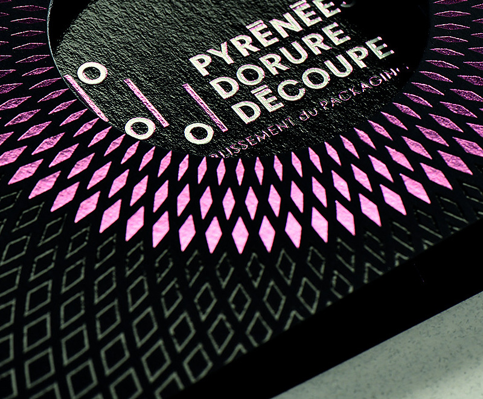
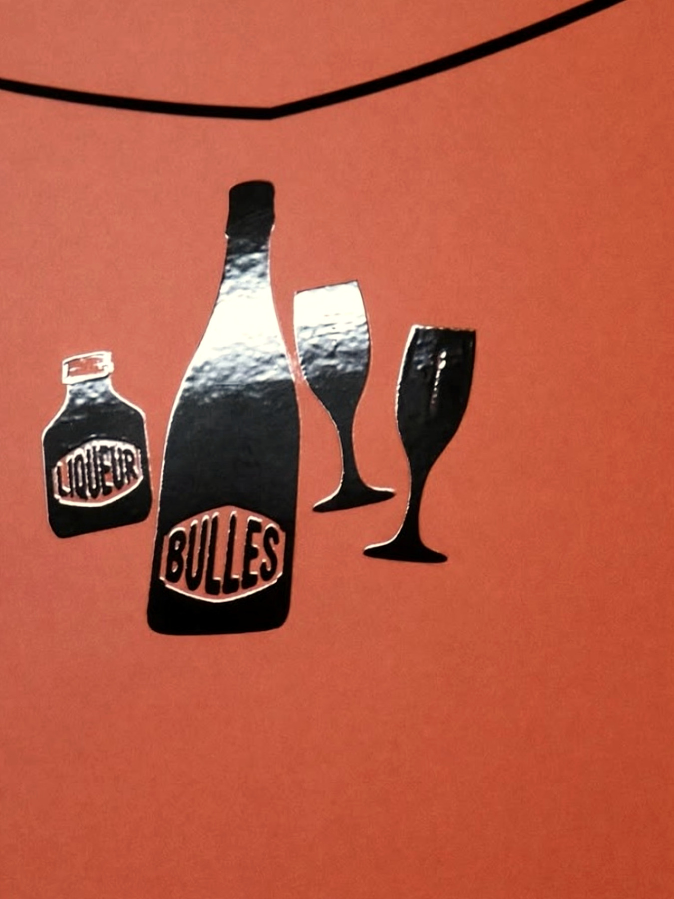
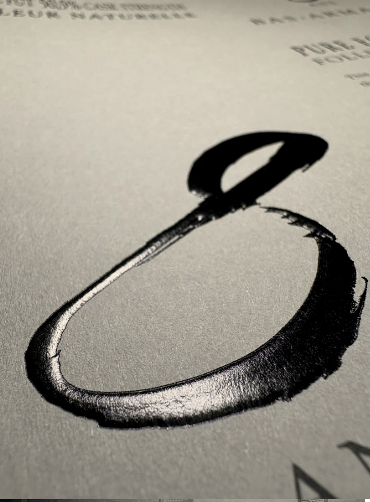

Accueil / Savoir-faire / Vernis sélectif
Vernis sélectif
Un contraste mat et brillant là où vous voulez attirer le regard. Le vernis souligne un logo, un motif ou un mot, et la pièce change d'aspect à chaque mouvement de la main.

Le motif apparaît avec la lumière
Sur cette carte noire mate, le motif est imprimé en vernis seul. Il reste presque invisible, puis se révèle quand la lumière l'accroche. Déplacez-la pour le faire apparaître.
Simulation indicative : le rendu réel dépend du support et de l'impression.
Déplacez la sourisFaites glisser le doigt sur la carte pour faire apparaître le motif
Ce que nous réalisons
Du monogramme discret au décor qui accroche la lumière, pour les imprimeurs de la cosmétique, de la parfumerie, des vins et spiritueux et de l'agro-alimentaire premium.

Contraste mat et brillant
Sur un pelliculage mat ou velours, le vernis fait apparaître le motif au moindre reflet.

Sur aplat de couleur
Le vernis donne de la profondeur à une couleur et détache une forme du fond.

Vernis en relief
Une épaisseur de vernis qui se sent sous le doigt, comme une goutte posée sur la pièce.
En pratique
- Format maximum
- 72 × 102 cm
- Supports
- Papier et carton compact, de 0,1 à 1,8 mm
- Vernis
- Brillant, à plat ou en relief
- Repérage
- Calé sur votre impression ou votre dorure
- Délai moyen
- 1 à 2 semaines, transport compris
- Essais
- Possibles pour les dossiers techniques
Questions fréquentes
Faut-il un pelliculage sous le vernis ?
Ce n'est pas obligatoire, mais le contraste est bien plus fort sur un pelliculage mat ou velours : le vernis brillant ressort nettement sur un fond sans reflet.
Quel fichier fournir ?
Un calque séparé et nommé, en aplat à 100 %, à l'endroit exact du vernis. Notre guide de préparation détaille chaque point.
Peut-on associer vernis et dorure ?
Oui. Le vernis et la dorure se calent l'un sur l'autre pour jouer sur deux brillances différentes dans le même décor.
Un projet de vernis sélectif ?
Se combine avec la dorure à chaud, le gaufrage, la découpe et le pelliculage, dans le même atelier.